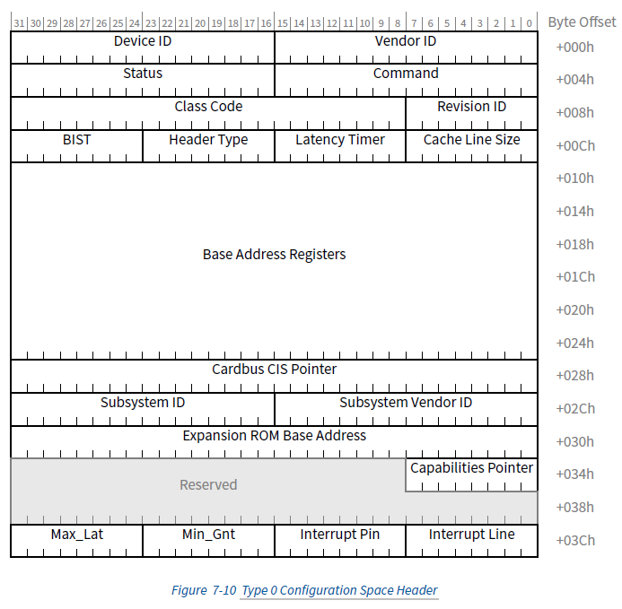
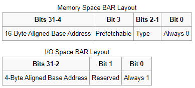
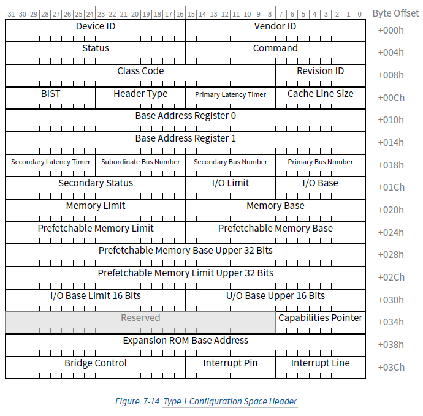
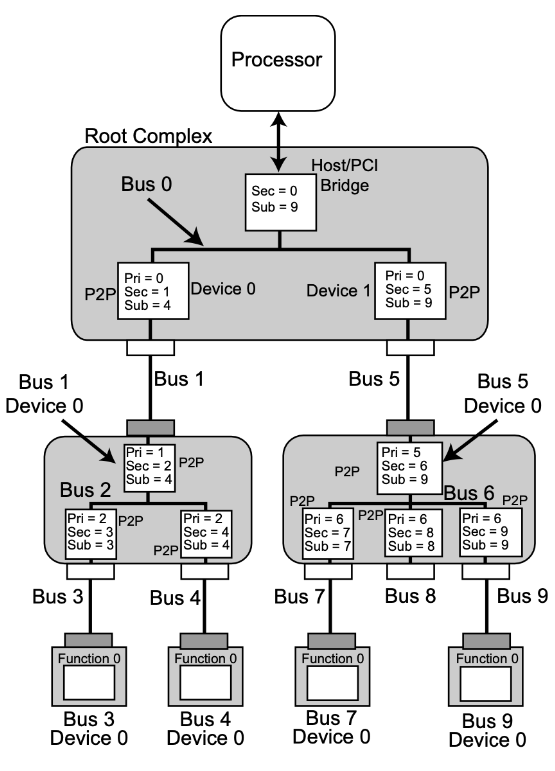

PCIe基础知识
课程概述
本课程将介绍PCIe（Peripheral Component Interconnect Express）的基本知识，包括配置空间、地址空间、深度优先遍历等核心概念。
1. PCIe简介
1.1 什么是PCIe
- PCIe是一种高速串行总线标准
- 替代了传统的PCI总线
- 采用点对点连接，支持全双工通信
- 具有更高的带宽和更好的扩展性
1.2 PCIe整体框图
PCIe的架构主要由五个部分组成：Root Complex，PCIe Bus，Endpoint，Port and Bridge，Switch

BDF(Bus Number, Device Number, Function Number)
PCIe上所有的设备，无论是Type 0还是Type 1，在系统启动的时候，都会被分配一个唯一的地址，它有三个部分组成：
Bus Number：8 bits，也就是最多256条总线 Device Number：5 bits，也就是最多32个设备 Function Number：3 bits，也就是最多8个功能
lspci -t -v
-[0000:00]-+-00.0 Intel Corporation Device 9b43
+-01.0-[01]--+-00.0 NVIDIA Corporation GK208B [GeForce GT 730]
| \-00.1 NVIDIA Corporation GK208 HDMI/DP Audio Controller
+-02.0 Intel Corporation CometLake-S GT2 [UHD Graphics 630]
+-08.0 Intel Corporation Xeon E3-1200 v5/v6 / E3-1500 v5 / 6th/7th/8th Gen Core Processor Gaussian Mixture Model
+-14.0 Intel Corporation Comet Lake PCH-V USB Controller
+-14.2 Intel Corporation Comet Lake PCH-V Thermal Subsystem
+-16.0 Intel Corporation Comet Lake PCH-V HECI Controller
+-17.0 Intel Corporation 400 Series Chipset Family SATA AHCI Controller
+-1b.0-[02]----00.0 Yangtze Memory Technologies Co.,Ltd Device 0071
+-1c.0-[03]----00.0 Realtek Semiconductor Co., Ltd. RTL8111/8168/8411 PCI Express Gigabit Ethernet Controller
+-1d.0-[04-05]----00.0-[05]--
+-1f.0 Intel Corporation B460 Chipset LPC/eSPI Controller
+-1f.2 Intel Corporation Memory controller
+-1f.3 Intel Corporation Comet Lake PCH-V cAVS
\-1f.4 Intel Corporation Comet Lake PCH-V SMBus Host Controller
Intel Corporation Comet Lake PCH-V USB Controller 的 BDF 是：0000:14.0
2. PCIe配置空间
2.1 配置空间概述
PCIe配置空间是用于存储设备配置信息的内存区域，每个PCIe设备都有自己的配置空间。
2.2 配置空间结构
配置空间大小：4KB（4096字节）

标准配置头

2.4 配置空间访问方法
- 端口访问
- 内存映射访问
- ECAM（Enhanced Configuration Access Mechanism）

如果某个设备的BDF是46:00.1，ECAM基址是0xE0000000，那么其配置空间起始地址就是：0xE0000000 + (0x46 << 20) | (0x00 << 15) | (0x01 << 12) = 0xE46001000。
Type 0设备


Type 1设备

4. PCIe深度优先遍历
4.1 PCIe拓扑结构
4.2 总线编号机制
- Primary Bus Number（Pri）：这个Bridge所在的Bus Number，也就是它的上游连接的Bus Number
- Secondary Bus Number（Sec）：这个Bridge所连接的下一个Bridge的Bus Number
- Subordinate Bus Number（Sub）：这个Bridge所连接的下游所有的Bus的最大的Bus Number
4.3 深度优先遍历算法
4.4 遍历过程详解

4.4.1 遍历步骤
- 从根总线开始：通常从总线0开始
- 扫描设备：遍历每个可能的设备号（0-31）
- 检查功能：对每个设备检查所有功能（0-7）
- 识别桥设备：通过Header Type识别桥设备
- 递归遍历：对桥设备的下游总线进行递归遍历
4.4.2 设备识别流程
读取Vendor ID → 检查是否为0xFFFF → 存在则处理设备 → 检查Header Type → 如果是桥设备则递归遍历子总线